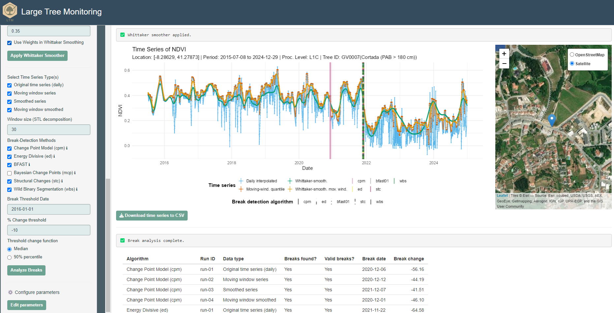

Large Tree Monitoring] (LTM) is an R-based project designed to monitor large trees using Sentinel-2 satellite imagery and Google Earth Engine (GEE). The project offers tools for data acquisition, preprocessing, analysis, and visualization to facilitate effective monitoring of large tree dynamics over time.
Data Acquisition: Utilizes GEE and rgee to access and download Sentinel-2 time series data for specified regions and time frames. As such it requires users to have a GEE account and the necessary rgee stack properly installed.
Spectral Indices Calculation: Computes various spectral indices to assess vegetation status, health and characteristics.
Data Preprocessing: Implements techniques for handling missing data, regularization/interpolation, and smoothing to prepare time series for analysis.
Break Detection Analysis: Detects significant changes or ‘breaks’ followed by decreases in vegetation greenness/amount in time series data using established R packages.
Visualization: Provides functions to visualize data and analysis results, aiding interpretation and decision-making.
Dependencies
Dependencies LTM leverages several R packages, including:
rgee: Interfaces R with Google Earth Engine.
sf: Manages and analyzes spatial data.
terra: Handles raster data.
tidyverse: A collection of packages for data manipulation and visualization.
rgeeExtra: Extends rgee functionalities.
imputeTS: Imputes missing time series data.
bfast: Detects and characterizes abrupt changes within time series.
forecast: Provides methods and tools for time series forecasting.
lubridate: Simplifies date and time manipulation.
ggplot2: Creates data visualizations.
Installation
To install the necessary packages, run:
install.packages(c("rgee", "sf", "terra",
"tidyverse", "rgeeExtra", "imputeTS",
"bfast", "forecast", "lubridate", "ggplot2")) Main usage guidelines
Google Earth Engine authentication: Authenticate your GEE account using the LTM_gee_auth.R script.
Data retrieval: Use LTM_gee_data.R to specify parameters and download Sentinel-2 data.
Preprocessing: Apply LTM_pre_proc.R to clean and prepare the data.
Break detection: Execute LTM_break_detection.R to identify significant changes in the time series.
Visualization: Utilize LTM_plots.R to generate informative plots of the data and analysis results.
Shiny Application
LTM includes a Shiny application (LTM_shiny_app.R) that provides an interactive interface for users to visualize and analyze data without extensive coding.
